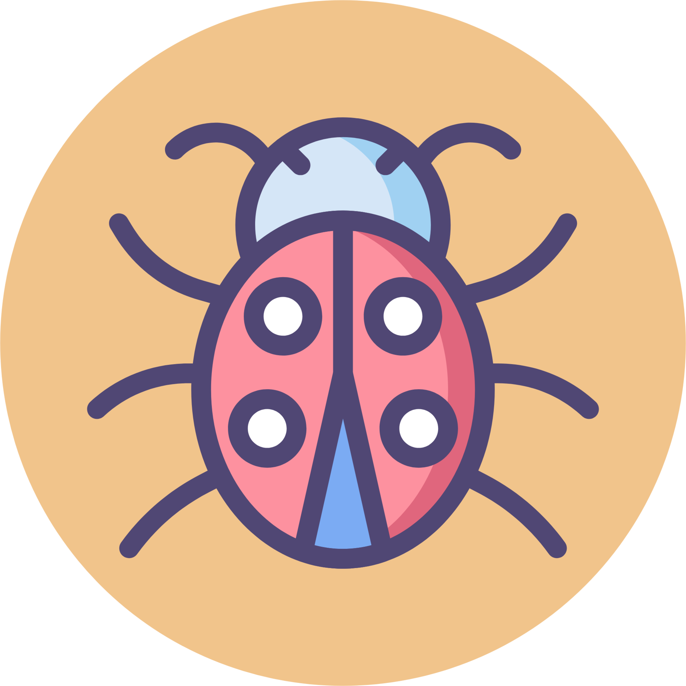

Hello, I'm Camila Nascimento, I'm a Quality Assurance tester Jr based in Portugal.
I have skills in:
- Playwright
- Cypress
-TypeScript
- JavascriptJira, Confluence
- HTML, CSS
- SQL
- Jira, Confluence
- Automated tests
- Manual tests, Unit tests, Integration tests
- CI/CD
- Git
- Phyton
- Java
- C
- APIRestful, API tests
- Postman tests
- Docker
- BDD
- Cucumber, Selenium IDE, Selenium Webdriver
- Manual tests on mobile apps
I'm hardworking and I like challenges, because then I learn more and become a better
professional. Let's work together. Hopefully I can add to your team.
